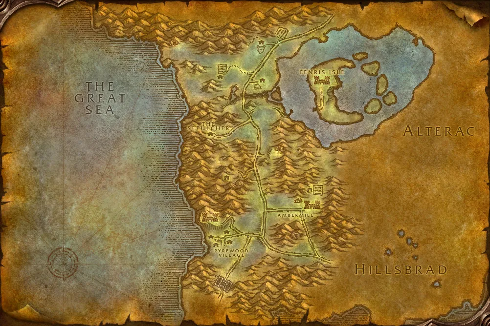

Accès
 Entrée Forêt des Pins-Argentés 44.8, 67.8
Entrée Forêt des Pins-Argentés 44.8, 67.8 5 joueurs · niveaux 20 à 26
5 joueurs · niveaux 20 à 26 3 quêtes · 10 boss
3 quêtes · 10 boss
Le point rouge marque l'entrée du donjon.
Toutes les zones sont sur notre carte interactive.
Le château d'Arugal, le mage fou de Dalaran, au nord de Pins-Argentés, peuplé de worgens et de morts-vivants.
📅 Mise à jour le 4 novembre 2026🛠 Patch 1.60.1.70753

Entrée Forêt des Pins-Argentés 44.8, 67.8 5 joueurs · niveaux 20 à 26 3 quêtes · 10 bossLe point rouge marque l'entrée du donjon.
Toutes les zones sont sur notre carte interactive.
| Objet | Type |
|---|---|
| Lanterne d'écurie sinistre | Main gauche |
| Objet | Type |
|---|---|
| Lame de hantise | Deux mains |
| Armure fantôme | Torse |
| Objet | Type |
|---|---|
| Fendoir du Boucher | Une main |
| Tablier sanglant | Torse |
| Hachoir du boucher | Une main |
| Maillet en chêne | Deux mains |
| Objet | Type |
|---|---|
| Sceau de la famille d'Argelaine | Doigt |
| Sceptre du baron | Main droite |
| Objet | Type |
|---|---|
| Mantelet félin | Épaules |
| Cape de meneur de loups | Dos |
| Bouclier fortifié | Bouclier |
| Objet | Type |
|---|---|
| Brassards du loup noir | Poignets |
| Peau de Fenrus | Dos |
| Objet | Type |
|---|---|
| Fragment de météore | Une main |
| Robe d'Arugal | Torse |
| Ceinture d'Arugal | Taille |
| Objet | Type |
|---|---|
| Hache de guerre du croissant | Deux mains |
| Cimier de commandant | Bouclier |
| Objet | Type |
|---|---|
| Bâton d'Odo | Deux mains |
| Ceinturon du guetteur aveugle | Taille |
| Objet | Type |
|---|---|
| Tranchelard | Deux mains |
| Jambières en peau d'abomination | Jambes |
| Mantelet sylvestre en cuir | Épaules |
Butin d'après les données de WoW Classic : Forever a ajouté de nouveaux objets dans les donjons, la liste sera complétée en jeu. Seuls les objets de qualité inhabituelle et mieux sont listés. Passe la souris sur un objet pour voir ses caractéristiques (info-bulle Wowhead), ou clique pour ouvrir sa fiche.
Donnée par : Grand exécuteur Hadrec (Forêt des Pins-Argentés)
Récompense : Mantelet fantomatique
Donnée par : Gardien Bel'dugur (Fossoyeuse)
Récompense : Brassards cerclés d'acier · Bottes grisonnante
Donnée par : Dalar Dawnweaver (Forêt des Pins-Argentés)
Récompense : Sceau de Sylvanas
Noms des quêtes, des PNJ et des objets d'après les données du jeu (Polestar, CC BY 4.0, et Factoruide/Questie).